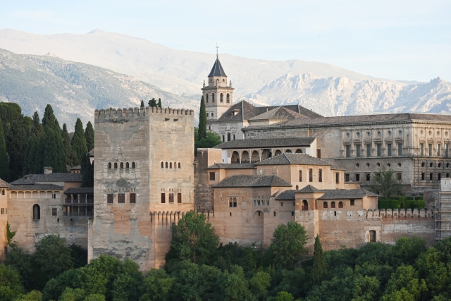
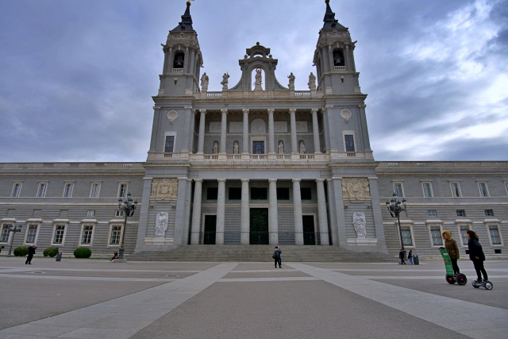
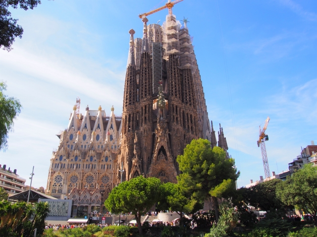

アルハンブラ宮殿
これはスペイン南部・グラナダにある世界遺産のイスラム建築です. アラビア語で「赤い城塞」を意味するアルハンブラは、 13世紀にナスル朝の歴代スルタンによって建設されました. 繊細な彫刻が施された「ナスル朝宮殿」や、 美しい庭園と水のせせらぎが特徴の「ヘネラリーフェ離宮」などから 構成されるイスラム建築の最高傑作です. 観光には事前予約が必要なので公式サイトから予約してみてください.
公式サイトは こちら

マドリード王宮
西ヨーロッパ最大の宮殿です. 3,000室以上の豪華な部屋には数々の宝物が飾られており, バロック様式の荘厳な世界を堪能できます. 18世紀にムーア人の要塞跡に建てられたこの建物には, 豪華な広間, 金箔の装飾および荘厳なフレスコ画があり, マドリードの文化と歴史を今に伝えています. 人が多いため, 予約してから行くとよいでしょう.
公式サイトは こちら

サグラダ・ファミリア
サグラダ・ファミリアは「Sagrada Família」と書き, カタルーニャ語で「聖なる家族」を意味します. これは, キリスト教におけるイエス・キリスト, 聖母マリア, そして養父ヨセフの3人を指し, この教会が彼らに捧げられたものであることに 由来しています. また, これは建築家アントニ・ガウディが設計しました. 18本の塔があり, イエス・キリスト, 聖母マリア, 12使徒, 4人の福音記者を象徴しています.
公式サイトは こちら